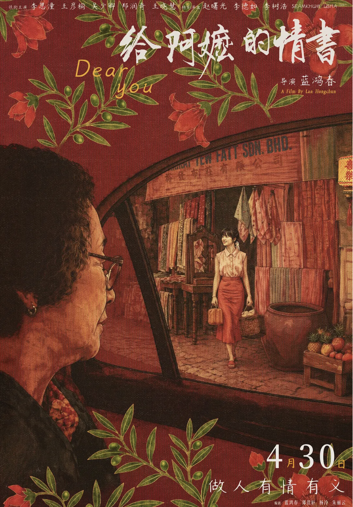
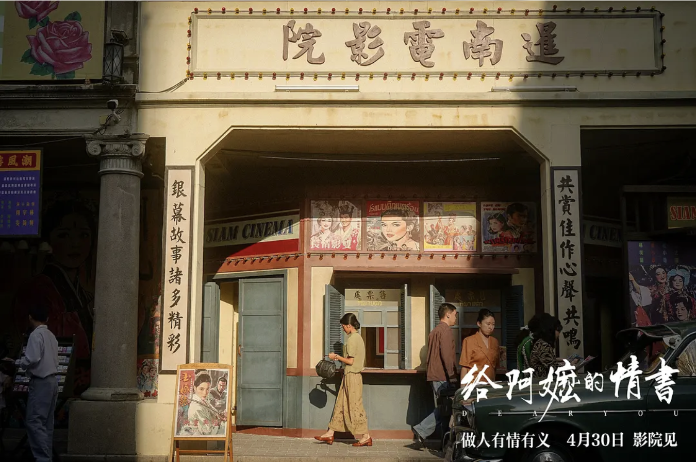
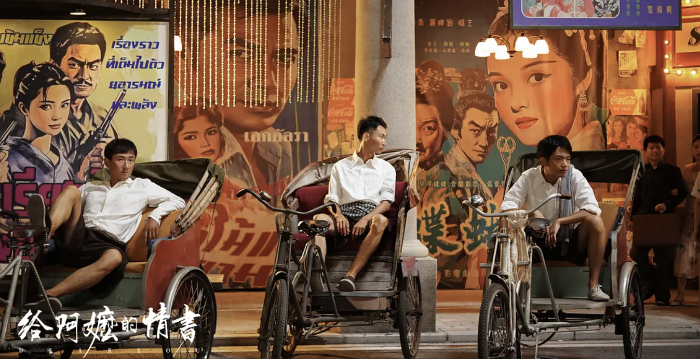

周末去电影院看了《给阿嬷的情书》。
近两年看过太多北美移民“离乡、移民、故乡、思念”的故事。自己本来对潮汕移民下南洋的故事也不太了解，而且另一部北美移民题材的电影《过往人生》给我的冲击又太大，我甚至有一点怀疑：我可能已经很难再被相似题材的电影打动了。
但电影里的感情还是一点一点地渗进来了。最让我震撼的不是那些我原本熟悉的“乡愁”和“移民”叙事，而是最后那个很安静的镜头：阿嬷坐在车里，车窗外是唐人街。然后过去和现在开始重叠：年轻的南枝站在那里，年轻的木生骑着车经过。阿嬷终于看见了那个她等待了一辈子的人曾经生活过的世界。

我忍不住去猜，她那时候究竟在想什么。
也许她会想，原来这就是我家木生生活过的地方。原来这些年，他看到的街道、经过的店铺、每天走过的路，是这个样子的。她终于看到了他当年的眼睛看到的唐人街。也许她会发现，这里和潮汕竟然那么像。她可能会突然觉得，也许木生没有她想象中那么想家，也许也因此终于有了一点释然。
然后她又看见了南枝。她也许会想，有这样一个老朋友在身边，他那时候也许过得没有那么辛苦吧。
她等待了那么多年，脑海里的木生可能一直停留在“远方的、想家的、需要被牵挂的人”这个形象里。到了这一刻，她终于不再只是想象那个远去的人过着怎样的生活，她第一次亲眼看见了他的世界，“我终于抵达了你的人生”。


后来我才知道，这个看似什么都没有发生的镜头，剧组其实反复拍摄了39次，最后使用的是第38次的画面。他们只是一直在等一个合适的光线，等唐人街落进那个刚刚好的黄昏里。
而这个镜头打动我的地方其实还有另外一层。当过去和现在重叠的时候，我们看到的不再只是木生和南枝的故事。他们其实只是唐人街里两个再普通不过的人，只是他们恰好被电影看见了。而在他们身后，还有无数没有被讲述的人生：有人一辈子没有回过故乡，有人慢慢习惯了这里的语言和食物，有人在这里重新开始落地生根。
对于阿嬷来说，她终于看见了木生曾经生活过的地方。
而对于我们来说，我们终于开始看见了木生之外，那些没有被讲述的人。